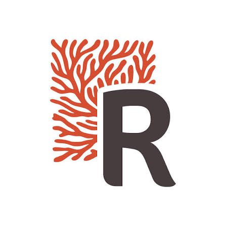

SAE 402 : Projet RECIF
RECIF, l'occasion de mettre en avant son talent.

AC 23.05 Réaliser, composer et produire pour une communication plurimédia
Le festival RÉCIF, seul festival de cinéma émergent de Nouvelle-Calédonie depuis 2024, propose chaque année projections, concours, ateliers et rencontres professionnelles dans les trois provinces, gratuitement en communes et sur neuf sites. Malgré cette richesse, sa visibilité reste faible. Notre objectif était donc de valoriser ses productions pour élargir son audience et encourager la participation du public.
Nous avons conçu et produit une communication plurimédia autour de deux défis. Le premier était créatif : réaliser deux vidéos présentant 13 longs-métrages, avec un fil conducteur qui respecte chaque œuvre sans perdre l'attention du spectateur. Le second était stratégique : prioriser des formats à fort impact, adaptés aux moyens d'un festival encore jeune.
Nous avons réalisé des réels, carrousels et stories pour Facebook afin de capter l'attention, et rédigé les contenus pratiques du site internet, qui sert de relais d'information. Nous avons ensuite organisé la diffusion de ces contenus dans un calendrier éditorial qui suit le parcours du public : visibilité (TOFU), intérêt (MOFU), puis participation (BOFU).